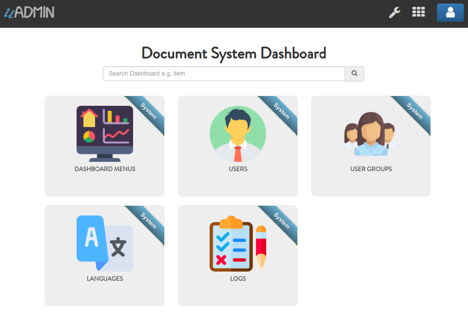

Document System Tutorial Part 1 - Build A Project¶
In this part, we will cover on building and preparing a project from scratch.
First of all, let’s create a folder for your project and prepare it.
$ mkdir -p ~/go/src/github.com/your_name/document_system
$ cd ~/go/src/github.com/your_name/document_system
$ uadmin prepare
[ OK ] Created: /home/pc_name/go/src/github.com/your_name/document_system/models
[ OK ] Created: /home/pc_name/go/src/github.com/your_name/document_system/api
[ OK ] Created: /home/pc_name/go/src/github.com/your_name/document_system/views
[ OK ] Created: /home/pc_name/go/src/github.com/your_name/document_system/media
[ OK ] Created: /home/pc_name/go/src/github.com/your_name/document_system/static
[ OK ] Created: /home/pc_name/go/src/github.com/your_name/document_system/templates
Use your favorite editor to create “main.go” inside that path. Put the following code in “main.go”.
package main
import (
"github.com/uadmin/uadmin"
)
func main() {
// Sets the name of the website that shows on title and dashboard
uadmin.SiteName = "Document System"
// Activates a uAdmin server
uadmin.StartServer()
}
Important
In Windows, you must set your loopback Internet protocol (IP) address by using uadmin.BindIP to establish an IP connection to the same machine or computer being used by the end-user.
Sample:
func main(){
// Put this code before uadmin.StartServer
uadmin.BindIP = "127.0.0.1"
}
Now to run your code (Linux):
$ go build; ./document_system
[ OK ] Initializing DB: [8/8]
[ OK ] Initializing Languages: [185/185]
[ INFO ] Auto generated admin user. Username: admin, Password: admin.
[ OK ] Server Started: http://0.0.0.0:8080
___ __ _
__ __/ | ____/ /___ ___ (_)___
/ / / / /| |/ __ / __ __ \/ / __ \
/ /_/ / ___ / /_/ / / / / / / / / / /
\__,_/_/ |_\__,_/_/ /_/ /_/_/_/ /_/
In Windows:
> go build && document_system.exe
[ OK ] Initializing DB: [8/8]
[ OK ] Initializing Languages: [185/185]
[ INFO ] Auto generated admin user. Username: admin, Password: admin.
[ OK ] Server Started: http://0.0.0.0:8080
___ __ _
__ __/ | ____/ /___ ___ (_)___
/ / / / /| |/ __ / __ __ \/ / __ \
/ /_/ / ___ / /_/ / / / / / / / / / /
\__,_/_/ |_\__,_/_/ /_/ /_/_/_/ /_/
Open your browser and type the IP address above. Then login using “admin” as username and password.

You will be greeted by the Document System dashboard that contains the system models built in uAdmin.
In the next part, we will discuss about creating and registering an external models in our application.